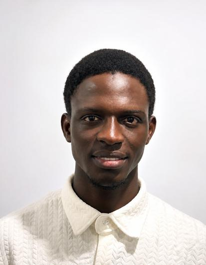
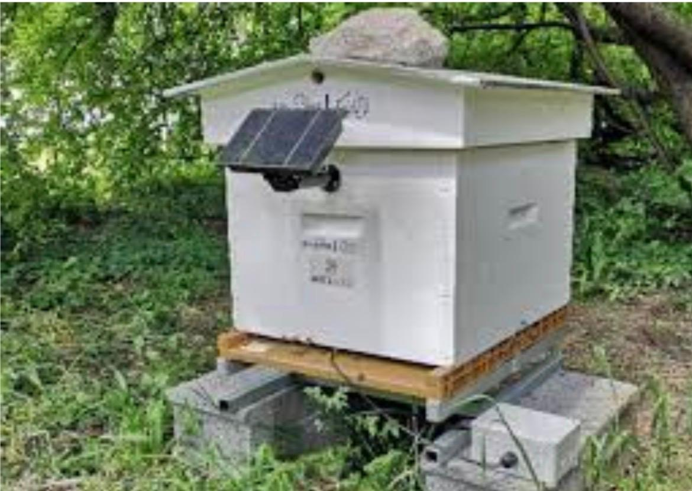
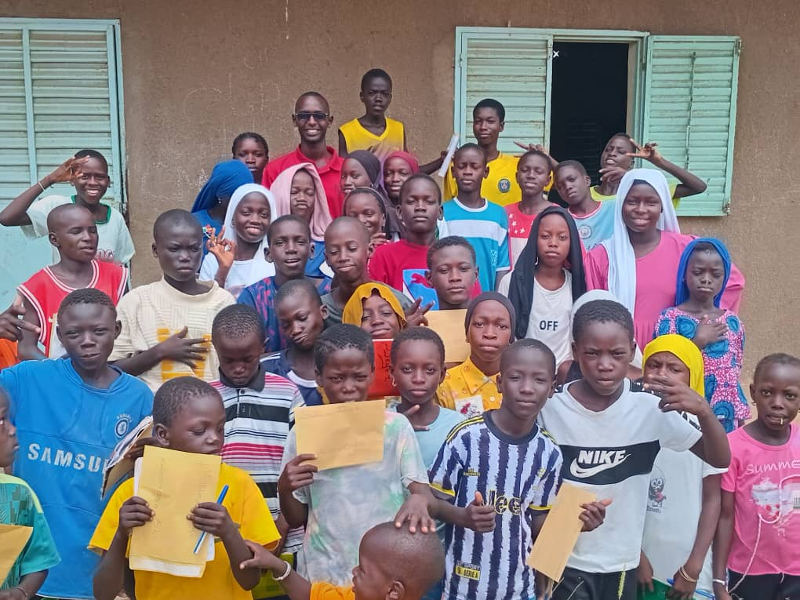
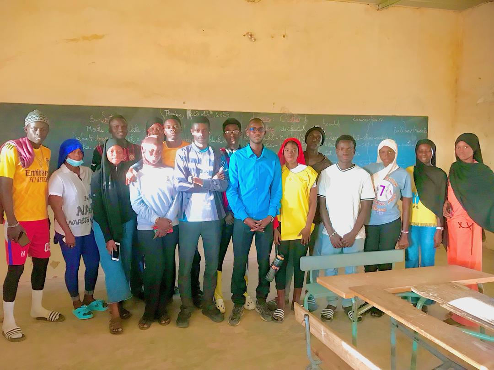
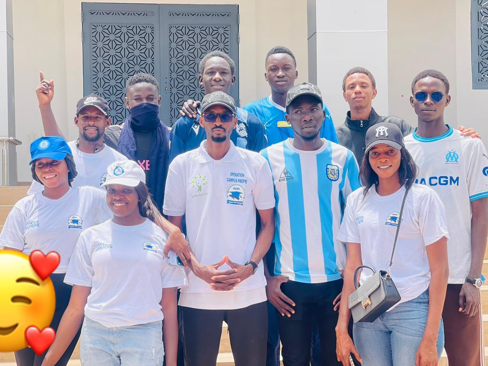
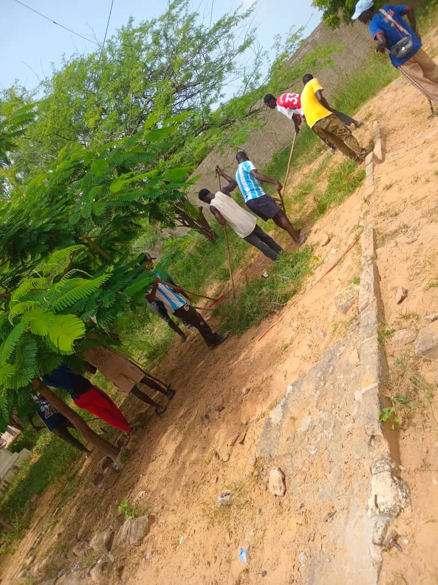
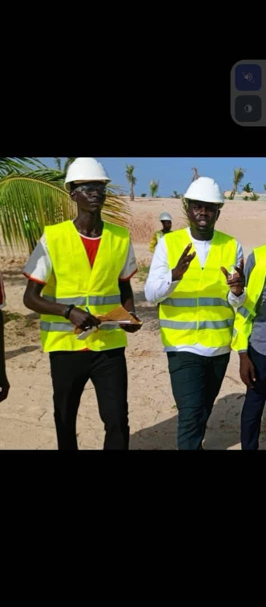

Accueil

Ibrahima Thioune
Je suis élève ingénieur en première année en Électronique, Énergie électrique et Automatique à l’ENSEEIHT de Toulouse. J’ai obtenu un BTS en électrotechnique au Sénégal avant de poursuivre mes études en France.
Passionné par l’énergie électrique, je souhaite continuer à développer mes compétences techniques dans les systèmes électriques et énergétiques.
Ce portfolio présente mes projets d’ingénierie, mes expériences professionnelles, mes objectifs de mobilité internationale, mes engagements citoyens et mes centres d’intérêt.
Présentation vidéo
Projets d’ingénierie et compétences
Ruche connectée — Projet de licence EEA

Université de Toulouse, janvier–juin 2026. Projet réalisé en équipe de trois.
Nous avons conçu et validé un prototype de ruche connectée capable de mesurer à distance la température, l’humidité et le poids de la ruche. Le système utilise une carte Arduino Uno, des capteurs DHT11 et SHT31, un module de pesée HX711 et une transmission Bluetooth vers un téléphone.
Nous avons vérifié les protocoles de communication (One Wire, I2C et UART) à l’aide d’un oscilloscope PicoScope et utilisé un GPS pour collecter des données de position. Nous avons aussi dimensionné une alimentation solaire avec un panneau de 5 W et une batterie lithium-ion de 20 Ah, pour une autonomie théorique de cinq jours.
Système photovoltaïque autonome pour un réfrigérateur de médicaments — Projet BTS

L’objectif était de concevoir un système photovoltaïque autonome capable d’alimenter de façon fiable et continue un réfrigérateur médical, afin de préserver la chaîne du froid des médicaments dans les zones isolées sans réseau électrique.
J’ai dimensionné le système à partir de la consommation du réfrigérateur (70 W), puis réalisé et testé un prototype composé d’un panneau solaire, d’un régulateur de charge, d’une batterie et d’un onduleur.
Développement du jeu Snake en langage C — Projet collectif à l’ENSEEIHT (N7)
Lors de la première année du cycle ingénieur à l’ENSEEIHT, j’ai travaillé avec un camarade sur un jeu Snake développé en langage C. Ce projet collectif nous a permis de pratiquer la logique de programmation, les structures de données et le débogage.
Animation décorative du jeu Snake.
Compétences techniques
- Automatismes industriels : programmation en Ladder (LD) et FBD ; analyse de cahiers des charges.
- Modélisation et simulation sous MATLAB/Simulink.
- Commande des systèmes : fonctions de transfert, diagrammes de Bode et stabilité.
- Électronique et systèmes embarqués avec Proteus et LTspice.
- Microcontrôleurs PIC avec MPLAB (C/assembleur), maintenance électrique et dépannage.
- Appareils de mesure : multimètre, pince ampèremétrique et ampèremètre.
Logiciels
- Proteus
- Zelio Soft
- LTspice
- MATLAB / Simulink
- MPLAB
Matériel
- Arduino
- PicoScope
- Multimètre et pince
Outils bureautiques
- Word
- Excel
- Canva
- PowerPoint
Carrière et expériences professionnelles
METAL AFRIQUE — Stage en maintenance électrotechnique
Septembre–octobre 2024
Lors de mon stage chez METAL AFRIQUE, j’ai découvert concrètement la maintenance électrotechnique et les installations électriques. J’ai participé au câblage d’armoires électriques, au dépannage d’équipements et au diagnostic de pannes. J’ai également travaillé sur la lecture de schémas électriques, la maintenance préventive et corrective, les tests et la mise en service. Cette expérience m’a permis d’appliquer mes connaissances théoriques sur le terrain et de développer une approche rigoureuse des interventions.
ALDI — Employé polyvalent, Toulouse
Depuis février 2026
Mon poste chez ALDI exige de l’organisation, de la réactivité et un sens des responsabilités. Mes missions comprennent l’encaissement, la mise en rayon, l’entretien du magasin et le respect des règles d’hygiène et de sécurité. Cette expérience développe mon autonomie, mon sens de l’organisation et mon sens du service.
Perspectives professionnelles
Actuellement en première année de formation d’ingénieur en Électronique, Énergie électrique et Automatique, je recherche des opportunités de stage ou d’alternance pour mettre en pratique les connaissances acquises. Je m’intéresse particulièrement à l’énergie électrique, à l’électrotechnique, à la modélisation et à la simulation des systèmes, ainsi qu’à l’automatique.
Mobilité internationale — Canada
C’est au Sénégal qu’est née ma passion pour l’énergie électrique. J’y ai obtenu un BTS en électrotechnique, puis j’ai poursuivi mes études en France. Ce parcours a renforcé mon envie de développer mes compétences techniques et d’approfondir mes connaissances.
Je souhaite aujourd’hui effectuer une mobilité internationale au Canada. Mon objectif principal est de renforcer mes compétences techniques, d’enrichir mes connaissances en énergie électrique et de découvrir de nouvelles technologies ainsi que de nouvelles pratiques professionnelles.
Cette expérience me permettrait aussi de découvrir un nouvel environnement culturel et académique, de rencontrer des personnes issues d’horizons différents et d’apprendre d’autres méthodes de travail. Je souhaite également améliorer mon anglais professionnel, en particulier ma capacité à communiquer, à collaborer et à échanger sur des sujets techniques dans un contexte international.
Engagement citoyen
Cours gratuits de mathématiques
Pendant les vacances scolaires au Sénégal, je donnais gratuitement des cours de mathématiques à des élèves de collège et de lycée. Cela m’a permis de partager mes connaissances, de les accompagner dans leur apprentissage et de contribuer à leur réussite scolaire.


Engagement associatif
Au Sénégal, j’ai été président de la commission sociale de l’amicale des élèves et étudiants de Diogo. Actuellement, je suis membre de la commission sociale de l’association des étudiants et stagiaires sénégalais de Toulouse. Ces engagements ont renforcé mon sens des responsabilités, mon esprit d’équipe et mon engagement solidaire.

Actions environnementales
J’ai participé à des journées de nettoyage et à des activités de reboisement au Sénégal, contribuant à la protection de l’environnement et à la préservation de notre cadre de vie.

Journée Futur Proche
J’ai participé à la journée Futur Proche à l’Université de Toulouse, avec des conférences et des sessions abordant notamment les ressources du campus et l’éthique en ingénierie. Ces échanges m’ont amené à réfléchir aux enjeux environnementaux, à l’utilisation responsable des ressources et aux responsabilités éthiques des futurs ingénieurs.
Représentation des élèves et étudiants de Diogo
J’ai été invité à participer à une visite de terrain organisée à l’occasion du déplacement du ministre de l’Énergie, en tant que représentant des élèves et étudiants de ma commune. Cette visite m’a permis de découvrir des entreprises du secteur énergétique et de mieux comprendre certaines réalités du milieu professionnel.

Sports et autres activités
Football
Le football est l’un de mes sports préférés. Il me permet de rester actif, de développer mon esprit d’équipe et de partager des moments de plaisir avec les autres.
Lecture et débats télévisés
J’aime la lecture et les débats télévisés. Ces activités me permettent d’élargir mes connaissances, de découvrir différents points de vue et de développer mon esprit critique.
Voyages
J’aime voyager, car cela me donne l’occasion de découvrir de nouveaux endroits, d’apprendre à connaître différentes cultures et d’élargir ma vision du monde.
Cinéma
J’aime le cinéma, car il me permet de découvrir différentes histoires, d’explorer de nouveaux points de vue et d’en apprendre davantage sur différentes cultures.
CV et contact
Langues
- Français
- Wolof
- Anglais